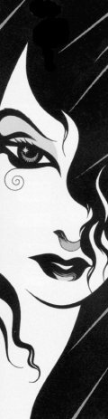

STORIES
If you know of a story or poem somewhere on the Internet that would fit in here, please mail me the URL.
This story features Delirium and some other familiar characters from Sandman, originally intended for The Sandman Book of Dreams.
A story about Mervyn Pumpkinhead, also intended for The Sandman Book of Dreams.
Lullaby by Dylan Verheul
A poem about the borders of Dream and Despair.
A short story, featuring Delirium and Dream.
A four-part story, a crossover between Blake's 7 and Sandman.